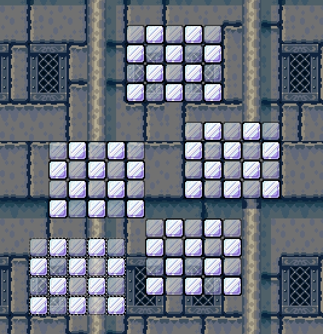

You can copy, cut and paste every block, bgo, npc and water-area in the level editor.
If you want to paste something your cursor switches to a paste icon and you enter pastemode. In this mode you can paste your copied items. Items will be pasted from the most left and top point of your cursor.
Copyed and pasted item group

Copyright © 2014 Platforger Game Engine by Wohlstand project. All rights reserved.